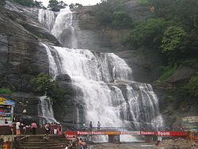

Home
Mainfalls
Old courtallam
Five Falls
Tiger falls
Mainfalls
- As we got closer to the Kutralam Falls, we saw gender-segregated changing rooms where the men were on the left side of the stream and the women and children were on the right side of the stream.
- A small stone arch bridge segregated the two sides at the base of the waterfall, and there was another larger bridge further downstream doing the same thing.
- There were some local authorities watching to make sure that there was no mixing of the genders on either side of the falls.
- Overall, given the juxtaposition of the impressive Courtallam Main Falls and the bustling marketplace before it, I couldnt help but get caught up in the energy of this place.